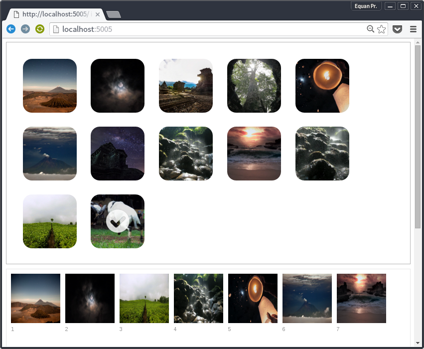

Image Uploader

Aplikasi ini sangat sederhana, cara kerjanya yaitu gambar di upload ke server dan kemudian ditampilkan kembali ke browser.
Server
Pada sisi server aplikasi ini memakai framework ExpressJS untuk menangani request HTTP dan paket formidable untuk menangani file yang diupload.
Catatan: Aplikasi ini memakai sedikit fitur ES6 seperti
let,const, arrow function sehingga anda perlu menginstall setidaknya Node.js v4.2.1 LTS
server.post('/upload', (req, res) => {
let form = new formidable.IncomingForm()
form.uploadDir = path.join(__dirname, 'uploads')
form.hash = true
form.multiples = false
form.keepExtensions = true
form.parse(req, (err, fields, files) => {
if (!err) {
console.log(files.file.name)
console.log(files.file.path)
console.log(files.file.type)
}
res.end()
})
})
Kode diatas akan menangani file yang akan diupload dan menyimpan hasil upload pada direktori uploads. Formidable dapat dengan mudah dikonfigurasi, lihat Github Formidable.
Uploader
Pada sisi klien uploder dibangun dengan memakai pustaka DropzoneJS yang mendukung drag n drop dan preview thumbnail. Pustaka ini sangat mudah untuk digunakan dan di kustomisasi
Dropzone.options.mydropzone = {
init: function () {
this.on("complete", function(file) {
updateImage()
})
},
maxFileSize : 2,
acceptedFiles: 'image/*'
}
Konfigurasi diatas mengakibatkan uploader hanya menerima file bertipe gambar dan ukuran file tidak lebih dari 2MB dan yang perlu dicatat yaitu ketika file selesai diupload yaitu dengan mendengarkan event complete maka list view gambar yang dibuat dengan Kendo UI harus diupdate dengan memanggil metode updateImage().
Image List
Kendo akan mengambil data dari server kemudian secara otomatis akan mengupdate #listView sesuai dengan banyaknya gambar yang telah terupload.
var updateImage = function () {
var dataSource = new kendo.data.DataSource({
transport: {
read: {
url: document.location.href+'service/images',
dataType: 'json'
}
},
pageSize: 21
})
$('#pager').kendoPager({
dataSource: dataSource
})
$('#listView').kendoListView({
dataSource: dataSource,
template: kendo.template($('#template').html())
})
}
Komponen Kendo UI yang dipakai adalah ListView dan framework UI ini seperti framework kebanyakan lainnya juga memakai template untuk menghasilkan UI secara dinamik.
<div class="demo-section k-content wide">
<div id="listView"></div>
<div id="pager" class="k-pager-wrap"></div>
</div>
<script type="text/x-kendo-template" id="template">
<div class="product">
<img src="/#=ImageName#"/>
<h3>#:ImageId#</h3>
</div>
</script>
Data yang akan diambil dari server yaitu data gambar harus mempunyai field ImageName dan ImageId.
Komponen yang disediakan oleh Kendo cukup lengkap dan jika anda tertarik dengan Kendo UI lebih lanjut silahkan berkunjung ke website resmi Telerik.
Untuk mengambil daftar gambar yang telah diupload klien akan mengakses URL berikut
http://localhost:5005/service/images
Server hanya akan memfilter file dengan tipe jpg dan png pada folder uploads. Filter dilakukan dengan mengecek tipe file melalui paket mime tepatnya melalui metode mime.lookup(image).
server.get('/service/images', (req, res) => {
let images = []
fs.readdir(upload_dir, (err, files) => {
if (!err) {
for (let imageIndex = 0; imageIndex < files.length; imageIndex++) {
let ftype = mime.lookup(path.join(upload_dir, files[imageIndex]))
if (filetypes.indexOf(ftype) !== -1) {
let data = {}
data.ImageId = imageIndex
data.ImageName = files[imageIndex]
images.push(data)
}
}
res.json(images)
} else {
res.end()
}
})
})
Data yang dikembalikan ke klien adalah data JSON dengan format seperti berikut
[{
ImageId: 1,
ImageName: 'file.jpg'
}]
Kode sumber dari aplikasi ini bisa anda dapatkan pada repo Github Image Uploader.